Le continent européen est défini par des frontières naturelles.
Au Sud, il est bordé par la méditerranée, au Nord par l’Arctique, à l’Ouest par l’océan Atlantique et à l’Est par le massif du Caucase et le détroit du Bosphore en Turquie.
Seul Chypre et l’Arménie n’ont géographiquement aucun territoire sur le continent, mais y sont rattachés
Et Parmi les 197 pays officiellement reconnus par l’ONU,
50 de ces derniers sont répartis sur le continent européen,
47 sont membres du Conseil de l’Europe et 27 pays sont membres de l’Union Européenne.
(MAJ: Le Royaume-Uni a decidé de quitter l’Union Européenne par Référendum le 23 juin 2016)
a
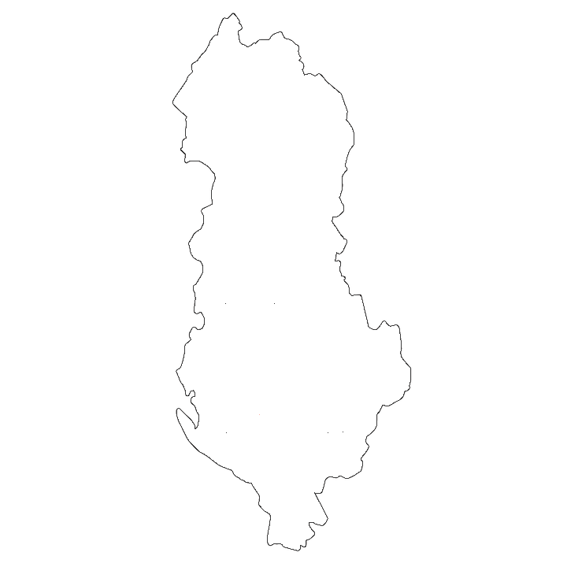Hymne national:
L'Hymne au Drapeau
Hymne national:
Le Chant des Allemands
Hymne national:
Le Grand Charlemagne
Hymne national:
Pays des montagnes, pays sur le fleuve
B
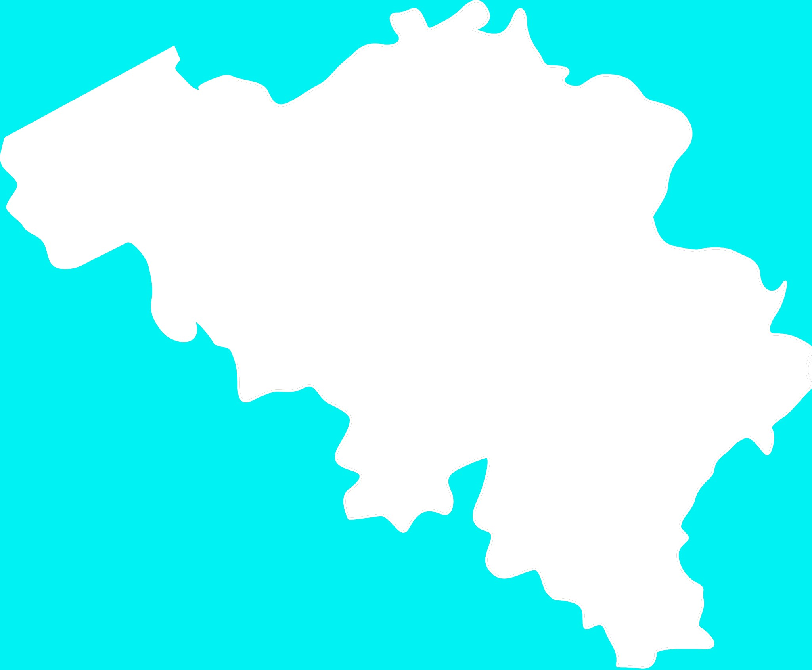Hymne national:
La Brabançonne
Hymne national:
Nous, Biélorusses
Hymne national:
Intermezzo
Hymne national:
Chère patrie
C
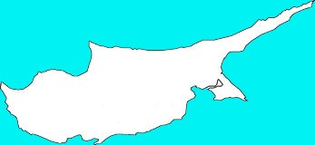Hymne national:
Hymne à la Liberté
Hymne national:
Toi, notre belle patrie
D
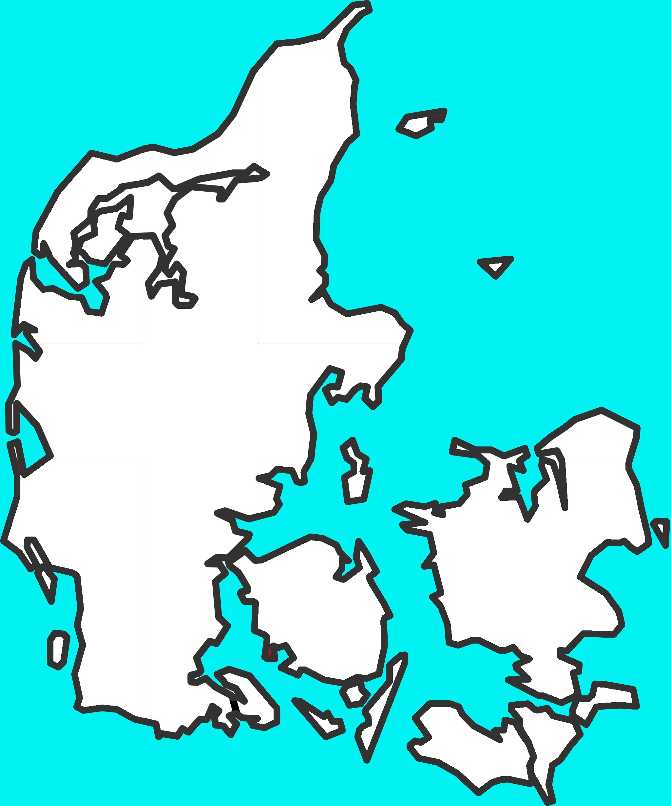Hymne national:
Il y a un pays charmant
E
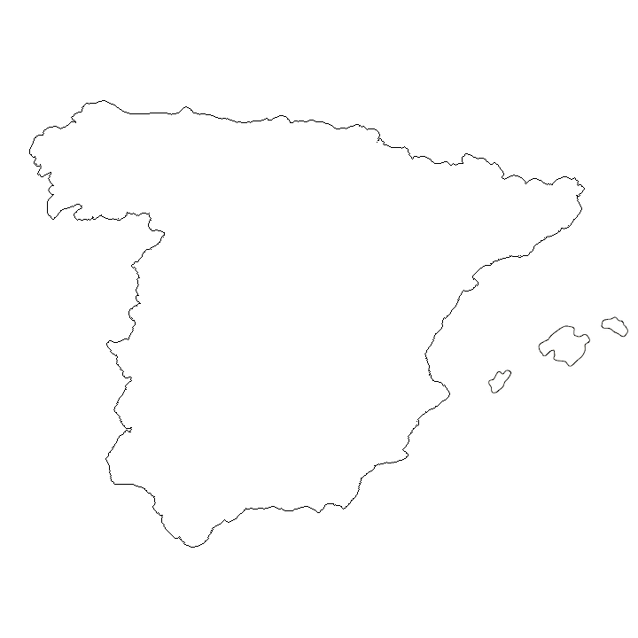Hymne national:
La Marche Royale
Hymne national:
Ma patrie, mon bonheur et ma joie
F
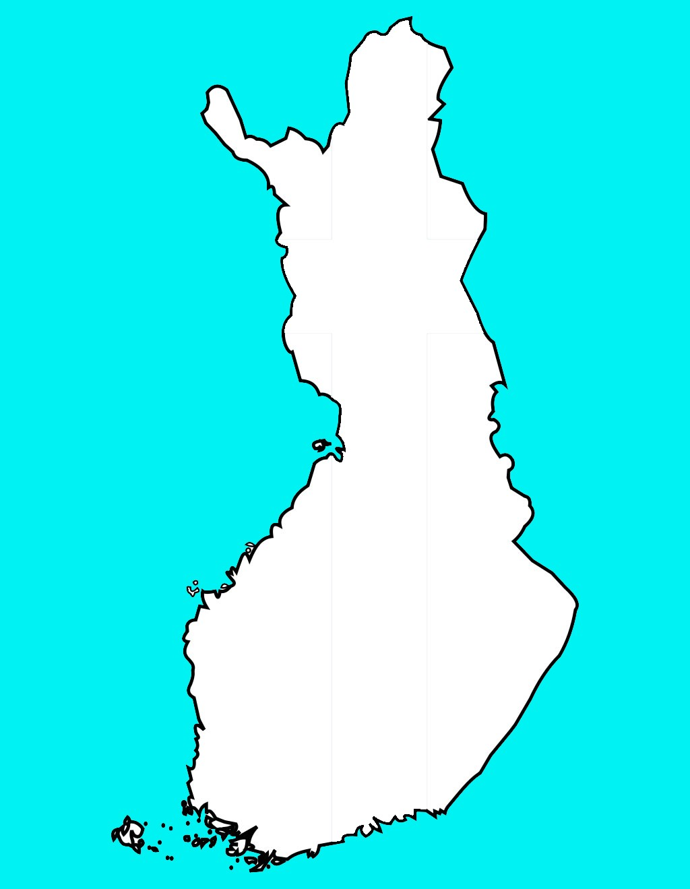Hymne national:
Notre Pays
Hymne national:
La Marseillaise
G
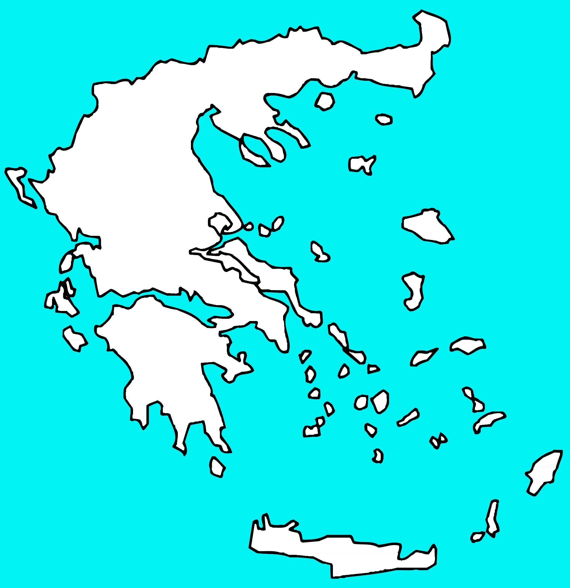Hymne national:
Hymne à la Liberté
H
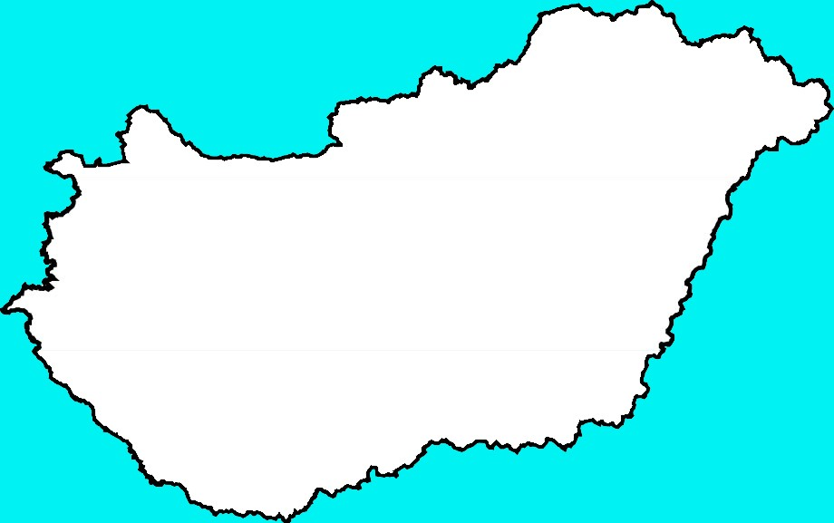Hymne national:
Dieu, bénis les Hongrois
I
Hymne national:
La chanson du soldat
Hymne national:
Chanson de gloire
Hymne national:
Frères d'Italie
K
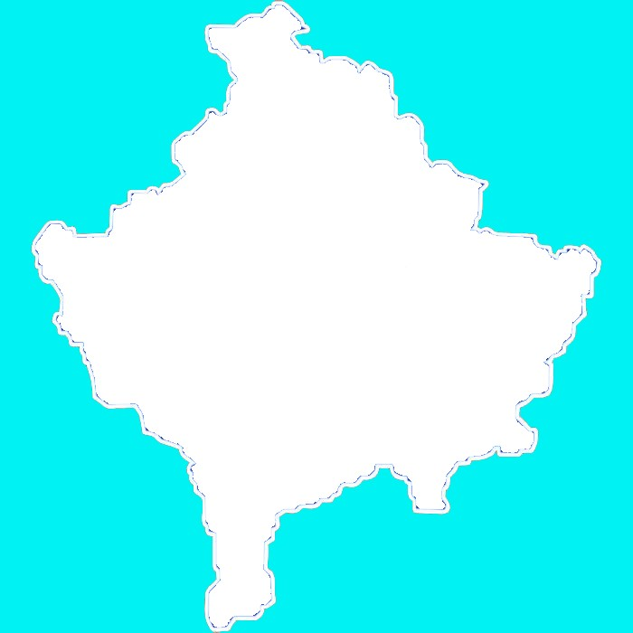Hymne national:
Europe
L
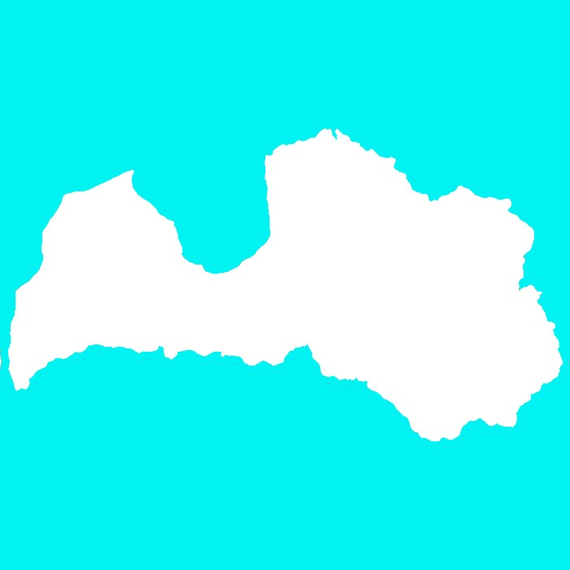Hymne national:
Dieu honore la Lettonie
Hymne national:
Haut au-dessus du jeune Rhin
Hymne national:
Chanson nationale
Hymne national:
Notre mère-patrie
M
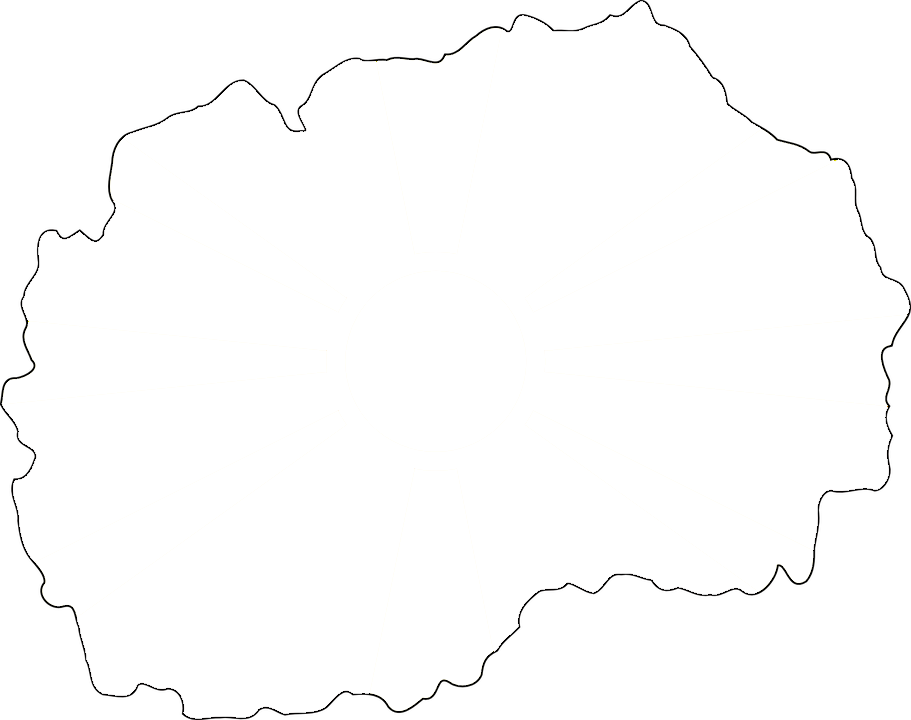Hymne national:
Le Soleil sur la Macédoine
Hymne national:
L'Hymne maltais
Hymne national:
Notre langue
Hymne national:
Hymne monégasque
Hymne national:
Ô brillante aube de Mai
N
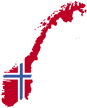Hymne national:
Oui, nous aimons ce pays
P
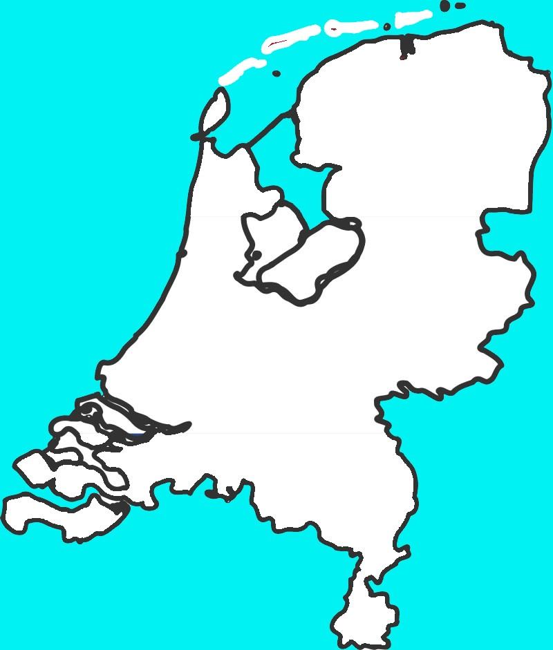Hymne national:
Guillaume de Nassau
Hymne national:
La Mazurka de Dąbrowski

Hymne national:
La Portugaise
R
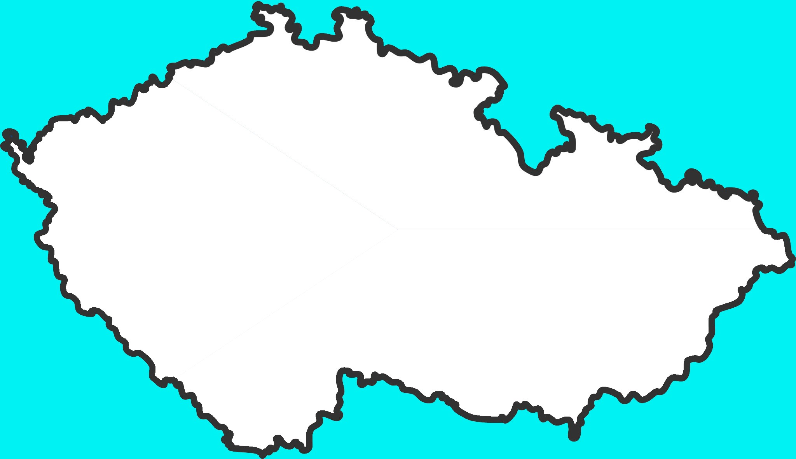Hymne national:
Où est ma patrie?
Hymne national:
Réveille-toi, Roumain
Hymne national:
Que Dieu sauve la Reine
Hymne national:
Hymne national de la Russie
S
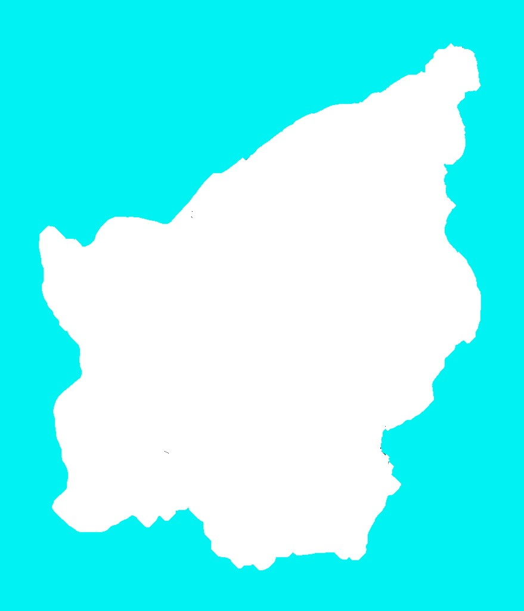Hymne national:
Hymne national de la république
Hymne national:
Dieu donne Justice
Hymne national:
Tempête sur les Tatras
Hymne national:
Santé !
Hymne national:
Toi l'antique, toi le libre
Hymne national:
Cantique suisse
U
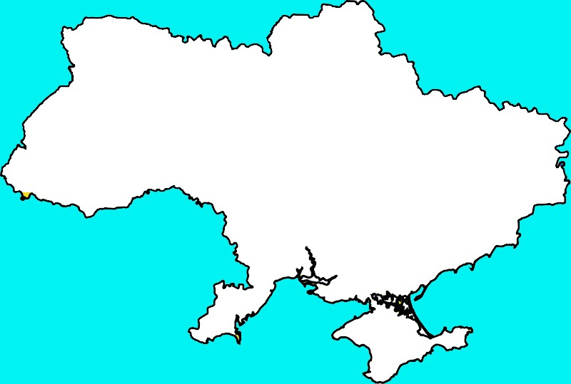Hymne national:
L'Ukraine n'est pas encore morte
V
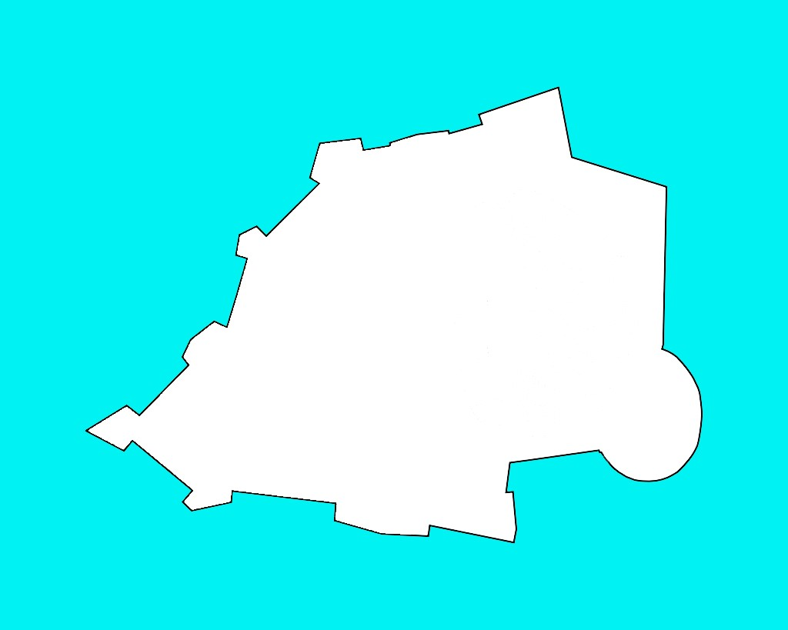Hymne national:
Hymne et Marche Pontificaux